Propriétés et paramètres du projet TWW
Propriétés du projet
Il existe plusieurs propriétés pertinentes dans un projet TWW :
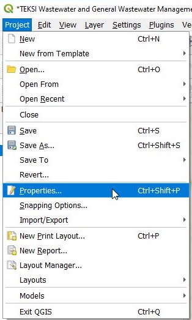
Sources de données
Paramètres principaux :
Il est recommandé de régler le mode transaction sur Groupes de transactions automatiques
Évaluer les valeurs par défaut côté fournisseur doit être coché
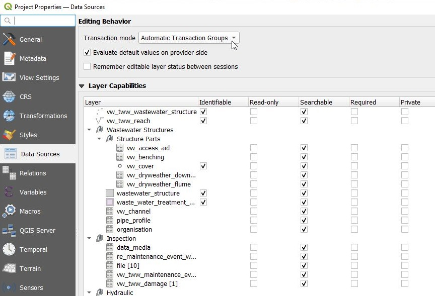
Relations
Les relations sont nécessaires pour que les fenêtres d’attributs des entités puissent référencer les tables connectées (par exemple, vous pouvez modifier les maintenance_events connectés dans la fenêtre d’attributs de vw_tww_reach). Lorsque cela est possible, des widgets de relations de valeurs (value relations) sont utilisés à la place des relations de projet. Les relations de valeurs sont utilisées pour les listes de valeurs, mais aussi pour les organisations et les pipe_profiles.
Les relations de valeurs (Value Relations) fonctionnent parfaitement aussi avec l’édition multiple (Multiedit), mais peuvent être lentes s’il y a beaucoup d’enregistrements dans la table ou la liste liée. Elles ne permettent pas de lier un enregistrement sur la carte (par exemple pour définir une connexion regard-bassin versant).
Les relations de projet (Project relations) permettent d’exploiter pleinement la relation entre deux objets (parent et enfant(s)) et de lier un enregistrement sur la carte. Elles sont plus rapides avec de grands jeux de données.
Attention
Avec les versions de QGIS antérieures à 3.40 : l’utilisation de l’édition multiple avec les widgets de relations de projet rencontre certains bugs côté QGIS ; manipulez ces attributs avec précaution.
Note
Les relations de projet ne sont pas (encore) modifiables et ne sont pas copiées lors du transfert vers d’autres projets .qgs.
Variables
Le projet TWW utilise des variables de projet pour simplifier certaines fonctionnalités de QGIS. Ces approches ne sont pas spécifiques à TWW et peuvent également être utilisées dans d’autres projets QGIS.
Dans le projet, les variables utilisées ont des noms commençant par « tww ».
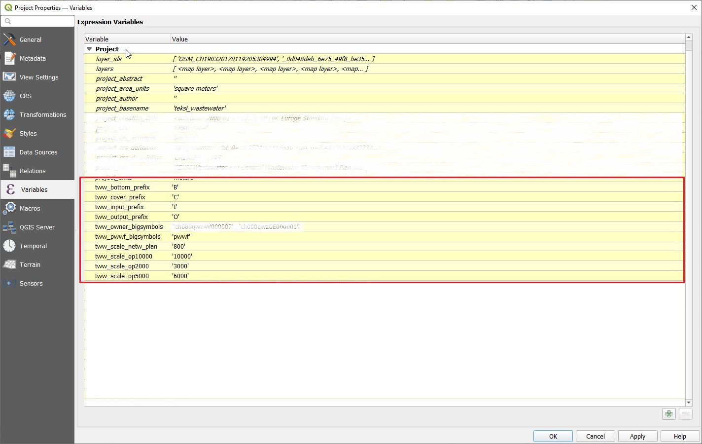
Variables pour la traduction des étiquettes
TWW utilise 4 variables pour traduire l’étiquetage des regards dans la langue souhaitée. Sans modification de ces variables, les niveaux sont étiquetés avec des lettres « anglaises » : « C » pour le niveau du couvercle (cover level), « I » pour le niveau d’entrée (Input level), « O » pour le niveau de sortie (Output level), « B » pour le radier (Bottom level). Dans un projet en allemand, vous changerez ces variables en « D » (Deckel), « E » (Einlauf), « A » (Auslauf) et « S » (Sohle) pour obtenir les étiquettes attendues.
Contexte : la base de données utilise toujours les lettres « anglaises » pour écrire les champs _*_label dans vw_tww_wastewater_structure. Dans la définition des étiquettes de vw_tww_wastewater_structure se trouve une formule « replace » qui remplace la lettre « anglaise » par la lettre définie dans les variables du projet :
“concat(_label, replace(_cover_label,”C”,@tww_cover_prefix), replace(_bottom_label,”B”,@tww_bottom_prefix), replace(_input_label,”I”,@tww_input_prefix), replace(_output_label,”O”,@tww_output_prefix))”
Variables pour définir la taille des symboles
Les symboles sont souvent grands ou petits, ou présentent des étiquettes différentes selon les attributs (réseau primaire ou secondaire, propriétaire des ouvrages d’assainissement). Comme il existe également des différences selon les langues (pwwf / paa / oap …), une solution consiste à définir dans une variable quelle valeur correspond à des symboles de grande taille. Vous pouvez utiliser cette variable dans des définitions de symboles basées sur des règles, dans la définition de taille des symboles, ou dans la définition de valeur des étiquettes, etc., dans différentes couches.
Modifié dans la version 2025.0.
Note
Utilisez les champs tww_is_primary pour rechercher ou symboliser avec les valeurs du champ function_hierarchic.
Variables pour définir l’échelle à laquelle les symboles du plan changent
Le VSA-DSS définit 5 types de plans (pipeline_registry, network_plan, 3 cartes de synthèse). Chaque plan a ses propres règles d’étiquetage et de symboles. Vous devez donc définir les échelles auxquelles afficher chaque type de plan. Ces échelles sont utilisées dans la définition des étiquettes des tronçons, dans la définition des symboles des tronçons, dans la définition des étiquettes des regards et dans la définition des symboles des regards (avec plusieurs styles pour chaque couche). En utilisant des variables, vous pouvez facilement modifier ces échelles.
Exemple dans vw_tww_reach :
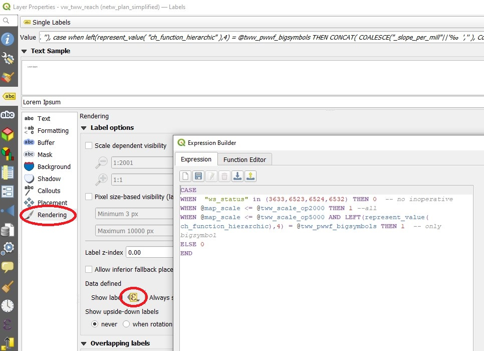
Styles / Couleurs de projet
La couleur pour mixed_wastewater (par exemple) est utilisée dans les symboles et étiquettes de vw_tww_reach, ainsi que dans les symboles et étiquettes de vw_tww_wastewater_structures. Modifier la couleur (ne serait-ce qu’une nuance de violet différente) représente beaucoup de travail et peut entraîner des erreurs si vous n’utilisez pas les couleurs de projet. Dans le projet TWW, des couleurs de projet sont définies pour toutes les valeurs des listes de valeurs suivantes :
channel.usage(_current/planned)
wastewater_structure.status.inoperative
catchment_area.drainage_system(_current/planned)
wastewater_structure.structure_condition/renovation_necessity (également utilisable pour condition_score et urgency_figure).
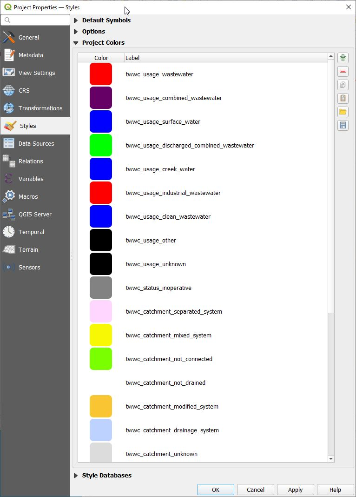
Pour modifier une couleur de projet, allez dans Projet/Propriétés/Styles/Couleur de projet, double-cliquez sur la couleur à modifier et définissez votre couleur. Cliquez ensuite sur OK et n’oubliez pas de cliquer sur Appliquer. Vous pouvez exporter et importer les couleurs de projet dans un fichier GPL.
Exemple dans vw_tww_reach :
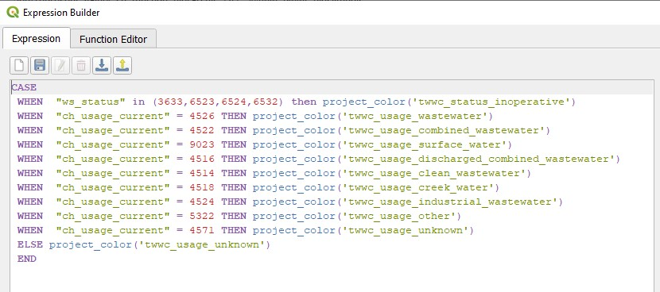
Thèmes de carte (Map Themes)
Plusieurs thèmes de carte sont définis dans le projet TWW, comme invitation à utiliser cette fonctionnalité de QGIS permettant de basculer entre différents styles de couches.
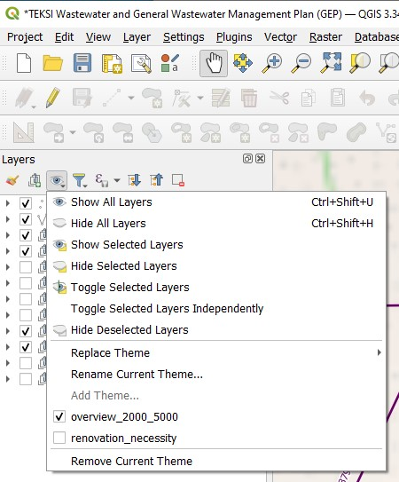
Il est important de comprendre ce que font les thèmes de carte :
Un thème de carte est un instantané de la légende de carte actuelle, qui enregistre :
les couches définies comme visibles dans le panneau Couches
et pour chaque couche visible :
la référence au style appliqué à la couche
les classes visibles du style, c’est-à-dire les éléments de nœud de couche cochés dans le panneau Couches. Cela s’applique aux symbologies autres que le rendu par symbole unique
l’état réduit/développé du ou des nœuds de couche et des groupes qui y sont placés
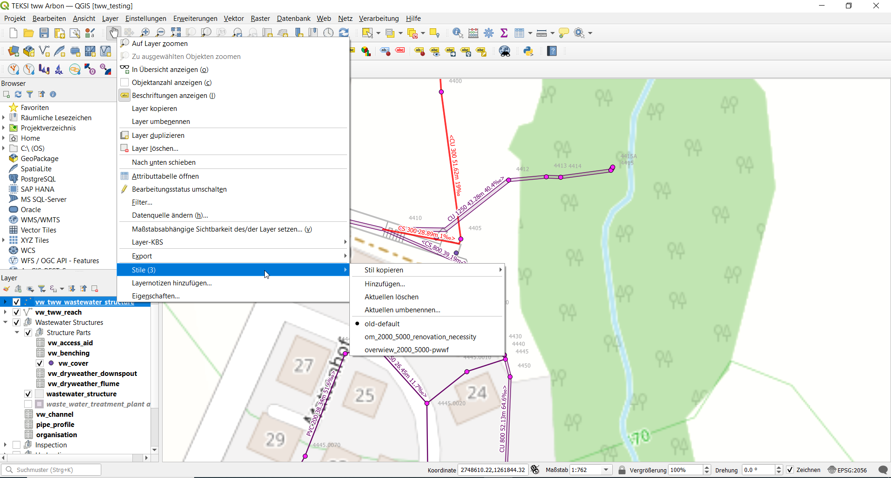
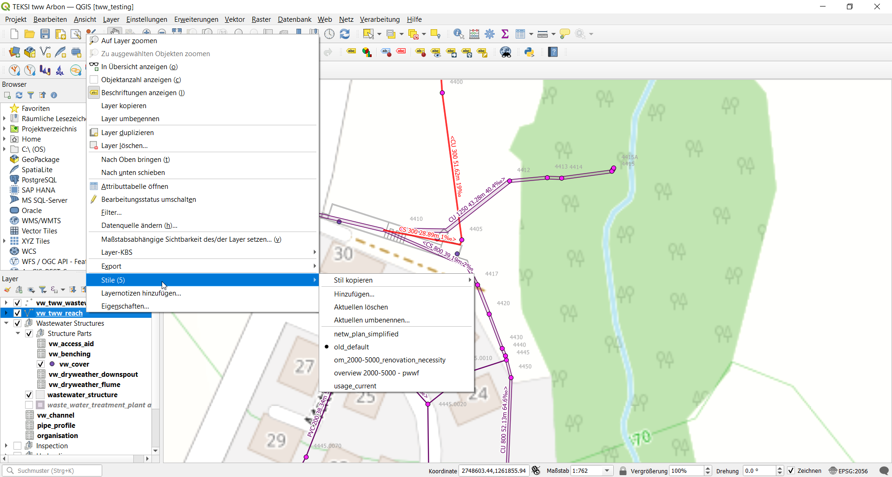
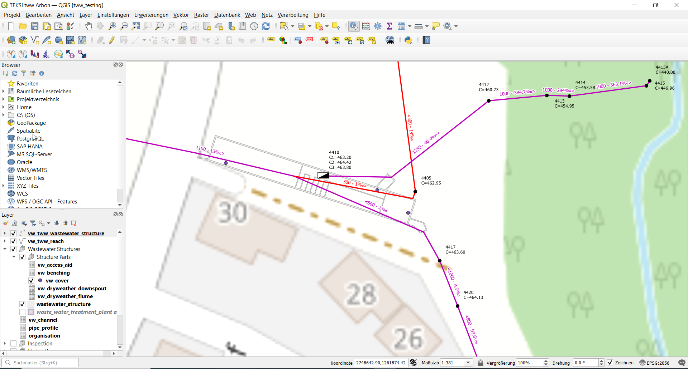
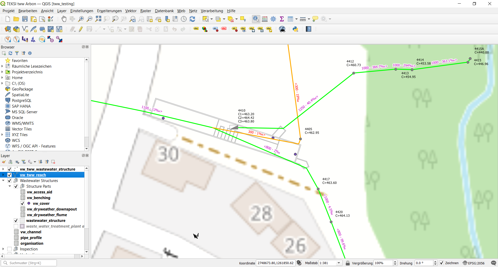
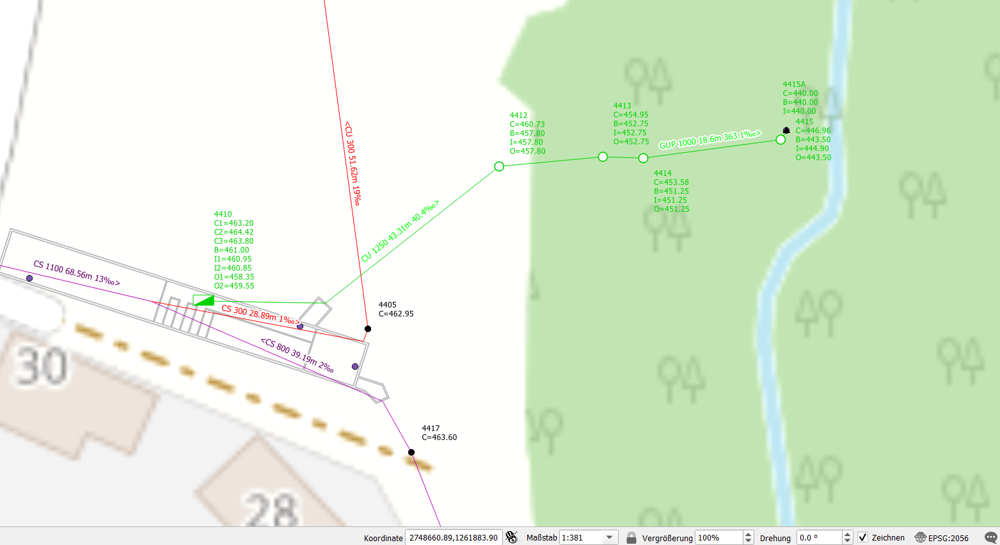
Styles multi-symboles
Modifié dans la version 2025.0.
Pourquoi des styles multi-symboles ?
Comme des représentations différentes sont nécessaires pour les couches importantes lors du PGEE, un nouveau style peut être créé pour chaque symbologie. Cependant, à chaque nouveau style, l’ensemble de la définition d’étiquetage, la configuration des formulaires d’attributs et les alias de champs sont également copiés. Lors de la traduction du fichier de projet pour une version allemande ou française, seuls les alias de champs du style actif sont ajustés.
Il y a donc de nombreux inconvénients, simplement parce que nous avons besoin de symbologies différentes…
La solution : les styles multi-symboles
Créez des symboles basés sur des règles et regroupez-les pour différents thèmes tels que plan de réseau, vue d’ensemble, nécessité de rénovation, etc.
Comment procéder :
Allez dans Couche/Propriétés/Symbologie et choisissez « Basé sur des règles »
Ajoutez une nouvelle règle avec le bouton +
Définissez le nom de votre nouveau groupe de symboles comme étiquette de la règle
Ne saisissez pas de filtre et désélectionnez le symbole → vous obtenez alors un nouveau « dossier de groupe »
Créez des symboles dans ce dossier de groupe en utilisant « Affiner les règles sélectionnées » ou simplement avec le bouton +, puis déplacez la nouvelle règle dans le dossier de groupe ou copiez/collez une autre règle existante…
Au lieu de changer de style, vous activez simplement un groupe et désactivez le groupe non utilisé. Vous pouvez aussi travailler avec les thèmes de carte QGIS, comme auparavant avec les anciens styles.
Ordre des couches
TWW utilise beaucoup de couches. Il est donc recommandé de les organiser de manière logique.
Le panneau d’ordre des couches permet de définir manuellement l’ordre des couches affichées dans la fenêtre de carte, sans modifier leur ordre dans le panneau des couches. Cela est particulièrement important lors de la numérisation avec les outils standards de QGIS et peut s’avérer très utile dans de nombreuses situations.
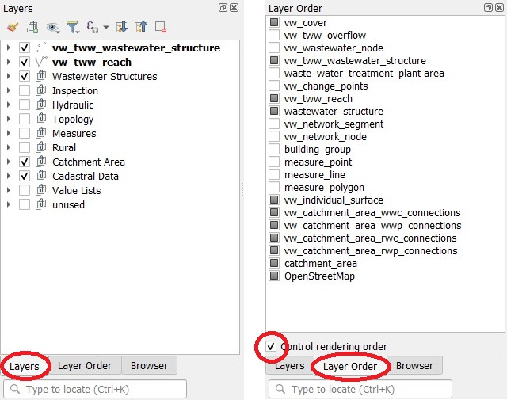
Indices contextuels pour les valeurs
Ajouté dans la version 2025.0.
Placez votre souris sur une valeur de la liste de valeurs d’un attribut et vous obtiendrez des informations supplémentaires sur cette valeur, s’il existe une description complémentaire dans le catalogue d’objets VSA-DSS (Objektkatalog).
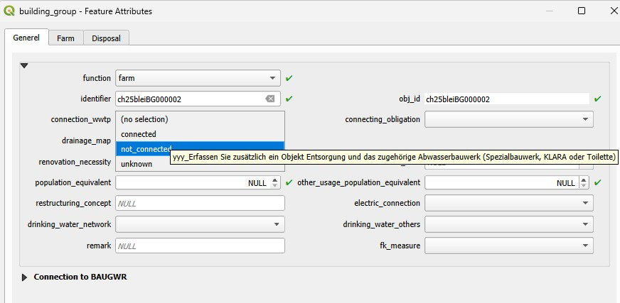
Indices contextuels pour les champs
Ajouté dans la version 2025.0.
Cela fonctionne uniquement pour les couches basées directement sur les tables tww_od, et non pour les vues.
Placez votre souris sur le nom de l’attribut et vous obtiendrez des informations supplémentaires sur ce champ, s’il existe une description complémentaire dans le catalogue d’objets VSA-DSS (Objektkatalog).
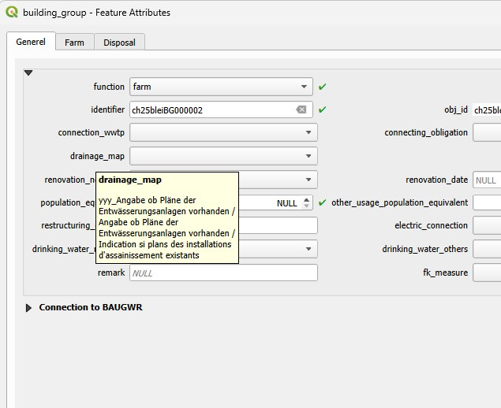
Quand TWW met-il à jour automatiquement les champs dataowner et provider
Pour tous les nouveaux enregistrements, les valeurs par défaut de la table tww_od.default_values sont utilisées.
Que se passe-t-il si vous modifiez la valeur de dataowner ou de provider d’un enregistrement existant ? Dans certains cas, les champs fk_dataowner et fk_provider des tables connectées changent également. Mais dans de nombreux cas, vous devez les mettre à jour manuellement. Ce qui suit décrit une modification du champ dataowner. Le même principe s’applique à une modification du champ provider.
modification du champ fk_dataowner dans vw_tww_wastewater_structure : tous les fk_dataowner des wastewater_networkelements connectés (nœud/regard) et des structure_parts connectées (couvercles, accès, etc.) changent également vers le nouveau fk_dataowner de l’ouvrage d’assainissement (wastewater_structure)
modification du champ wn_fk_dataowner dans vw_tww_wastewater_structure : aucun autre champ fk_dataowner ne change (overflow, hydr_geometrie, etc. ne changent pas non plus)
modification du champ fk_dataowner dans vw_cover : aucun autre champ fk_dataowner ne change
modification du champ fk_dataowner dans hydr_geometry : les champs fk_dataowner de hydr_geometry_relation ne changent pas
modification du champ fk_dataowner dans vw_tww_reach (il s’agit du champ tww_od.wastewater_networkelement.fk_dataowner) : fk_dataowner change également dans les wastewater_structures connectées (channel). Les valeurs des champs reach_point.fk_dataowner ou des structure_parts connectées ne changent pas !
modification du champ fk_dataowner dans vw_wastewater_structure : tww_od.wastewater_networkelement.fk_dataowner (reach) change également.
modification du champ fk_dataowner dans pipe_profile : fk_dataowner dans profile_geometry connecté ne change pas